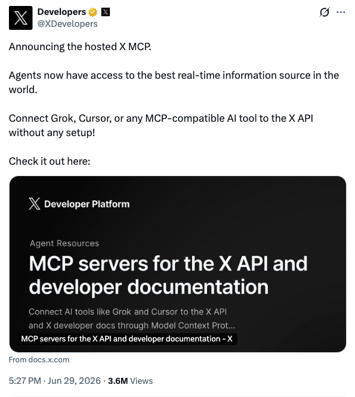
以后你不用把 X 上的链接一条条复制给 AI 了。
更准确地说，AI 终于可以自己去 X 里找东西了。
6 月 30 日，X Developers 宣布上线 hosted X MCP。
官方文档显示，X MCP 可以把 Grok Build、Cursor、Claude、VS Code 等支持 MCP 的 AI 工具接到 X API 上，让模型搜索帖子、查用户、读趋势新闻、管理书签，甚至起草和发布 Articles。
对内容创作者、研究员、产品经理和创业者来说，它改掉的是一个很烦的动作：你不再只是把材料喂给 AI，而是可以让 AI 去你的信息源里找材料。
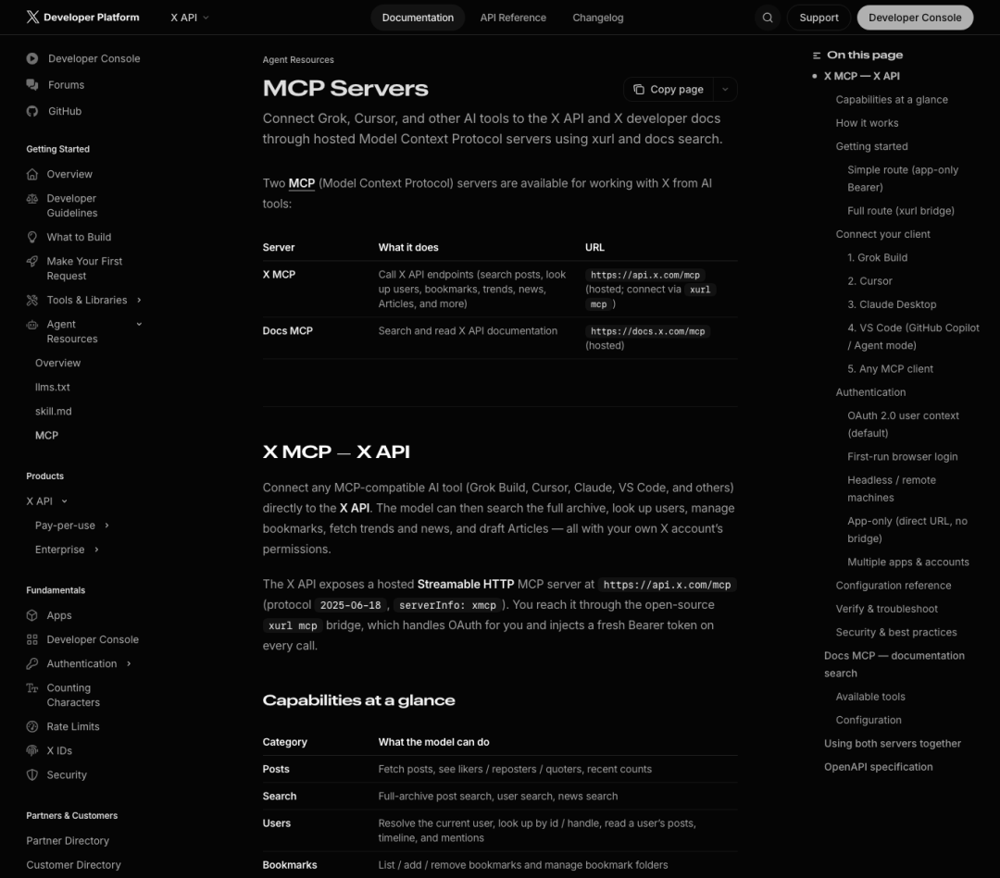
图源：X Developer Platform 文档
别再手动复制粘贴 x 链接了
你在用 AI 研究 x 推文时，是不是像我之前一样：
看到一条帖子，复制链接；看到一个讨论串，再复制；收藏夹里有十几条线索，还要手动整理。最后丢给 AI，让它总结“最近发生了什么”。
问题是，AI 常常不知道哪条是源头，哪条是转述，哪条只是情绪放大。你给它三条材料，它就像只看了三页卷宗的助理，语气很自信，信息却可能漏了一半。
X MCP 把这个流程往前推了一步。
官方文档写得很直接：它能做全库帖子搜索、用户搜索、新闻搜索，能读用户帖子、时间线、mentions，也能列出、添加、删除书签。
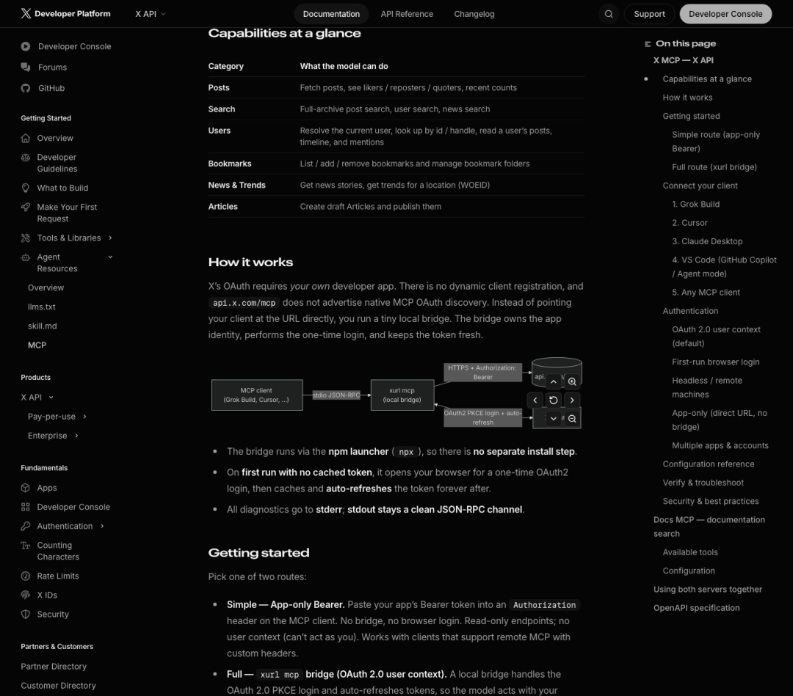
图源：X Developer Platform 文档
X 卖的不是开放，是入口
2023 年，Twitter 曾更新开发者规则，第三方客户端生态受到重创；随后 API 从“很多人可以免费接”走向更强的付费和管控。那段历史说明一件事：X 从来不只是社交网络，它还控制着实时公共信息的闸门。
现在 X MCP 做的，是把这道闸门重新包装给 AI Agent。
以前开发者要自己读 API 文档、处理 OAuth、写搜索和数据清洗逻辑。现在官方直接告诉你：用 xurl mcp 这个本地桥接工具，接到 https://api.x.com/mcp，就能让 MCP 客户端调用 X API。
本质是把实时信息变成 AI 可以调用、可以计费、可以权限控制的工具。
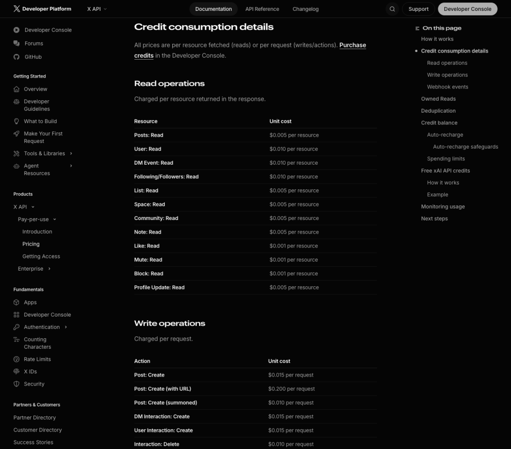
图源：X Developer Platform 价格文档
价格呢？
官方价格页显示，X API 现在按用量付费。
读取帖子是每条 0.005 美元，读取用户是每个 0.010 美元；
写入类操作按请求收费，创建普通帖子是每次 0.015 美元。
以后你的 Agent 做一次热点研究，不只是消耗模型 token，还可能消耗数据源调用费。AI 的账单里，会多出一个过去很少被普通用户感知的东西：实时信息成本。
至于使用权限，X MCP 有两条路。
简单路由可以用 App-only Bearer token，主要做只读请求，没有用户上下文。
完整路由要走
xurl mcp，通过 OAuth 2.0 登录，让模型在你的账号权限下行动。这样它才能处理书签、Articles 这类需要用户身份的任务。
你可以让 AI 把过去一周收藏的 AI 工具帖按主题归类；让它找某个创业者最近三个月反复谈的方向；让它从竞品账号、用户吐槽和行业新闻里整理产品机会。
但这也是边界。
一个能帮你管理书签、起草文章、调用实时搜索的 Agent，不再只是聊天框。它开始接触你的账户、资料、预算和发布动作。
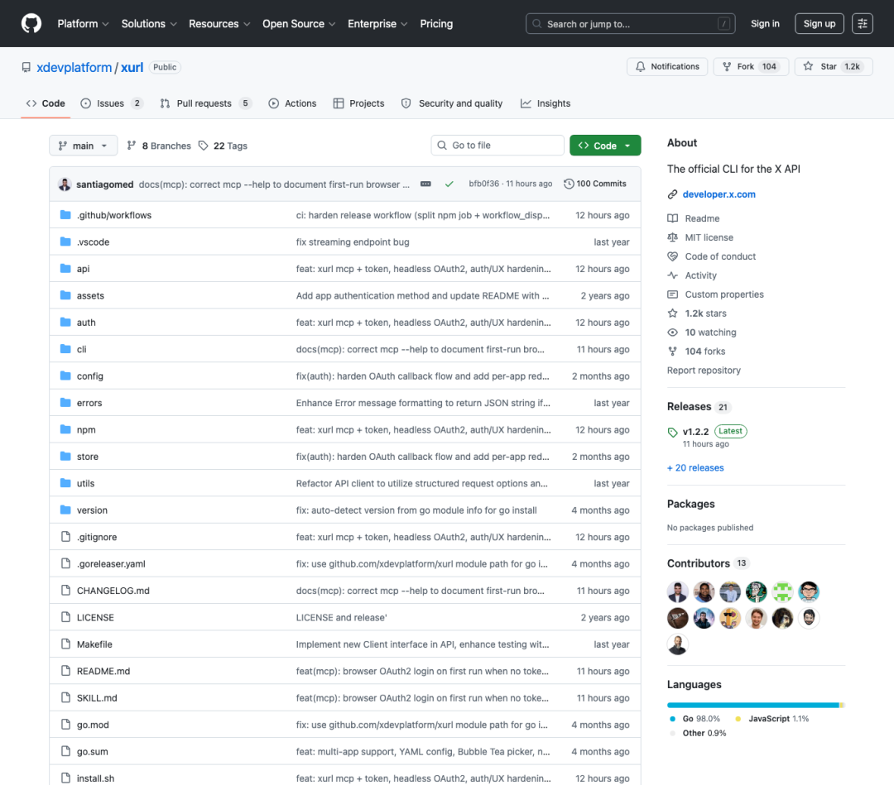
图源：xdevplatform/xurl GitHub 仓库
来看一些真实案例
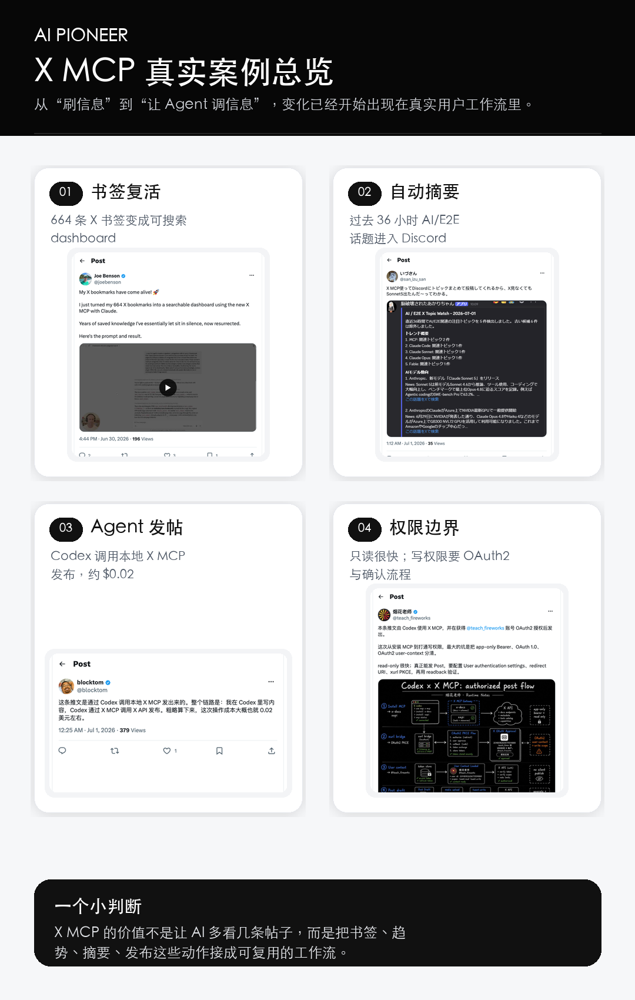
AI Pioneer 制图
最直观的例子，是收藏夹。
Joe Benson 在 X 上说，他用 Claude 和新的 X MCP，把 664 条 X 书签做成了一个可搜索的 dashboard。这个场景很小，但很说明问题：
过去书签只是“我以后再看”的坟场，现在它可以变成一个能被检索、分类、二次写作的资料库。
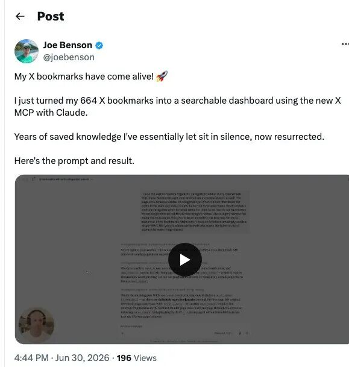
图源：Joe Benson X 帖子
第二个例子更像信息工作流。
日本用户 san_izu_san 展示了一个 Discord 摘要：
X MCP 会把过去 36 小时 AI/E2E 相关话题抓出来，过滤旧候选，再按趋势、模型动态整理。用户的感受很直接：不用打开 X，也知道 Sonnet 5 出来了。
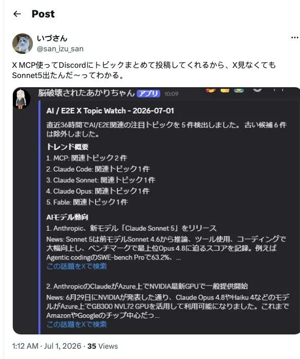
图源：san_izu_san X 帖子
第三类案例，开始碰到写权限。
中文用户 blocktom 说，自己在 Codex 里写内容，再通过本地 X MCP 调用 X API 发布，粗略估算一次操作成本约 0.02 美元。
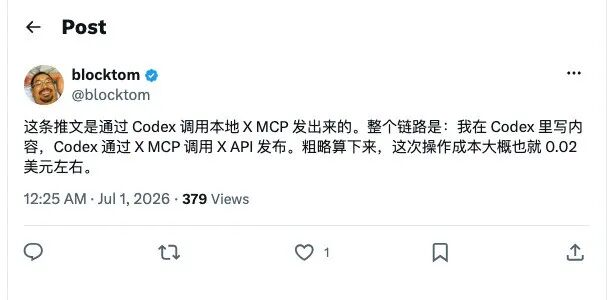
图源：blocktom X 帖子
另一位用户“烟花老师”也用 Codex + X MCP 发帖，并提醒真正打通写权限的坑在于：要分清 app-only Bearer、OAuth 1.0 和 OAuth2 user-context。只读很快；真要发 Post，需要配置用户认证、redirect URI、xurl PKCE，再做 readback 验证。
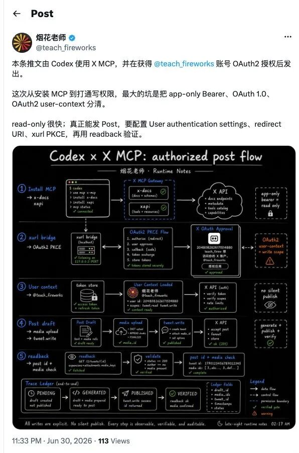
图源：烟花老师 X 帖子
信息流会变成工作流
X MCP 最先影响的，
是那些每天都在从信息流里捞东西的人。
比如本小编。。。
内容创作者可以把收藏夹变成选题池，不用靠记忆翻旧帖。
研究员可以让 Agent 围绕一个人物、公司或产品持续抓线索，再把噪音和源头分开。
产品经理可以盯竞品更新、用户抱怨、开发者反馈，而不是等周报里出现二手摘要。
开发者更直接。Cursor、Claude Desktop、VS Code Agent 都在官方连接名单里。以后写代码时，Agent 不只是读你的仓库，也能去 X 上找最新 API 变更、官方解释和社区踩坑。
当然，这不会自动产出好判断。
社交媒体最便宜的是信息，最贵的是辨别。MCP 只是让 Agent 拿材料更方便，不负责保证材料是真的、全的、重要的。
但入口已经变了。
浏览器时代，入口是你刷到什么。
Agent 时代，入口会变成 AI 能调用什么。
X 这次发布的不是一个“更方便的插件”，而是在告诉市场：
实时信息源也会被工具化、权限化、按次计费。
以后真正稀缺的，可能不是谁拥有更多信息，而是谁能让 Agent 在正确的信息源里，用可控成本，把问题问对。
如果觉得本文对你有帮助，
欢迎 点赞+❤️ 分享给身边的朋友，
也欢迎私信公众号后台加入AI先行者交流圈，
我们下期再会～
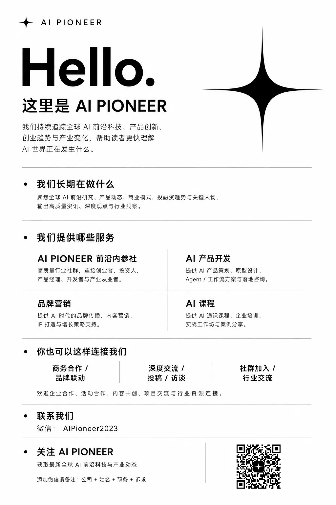
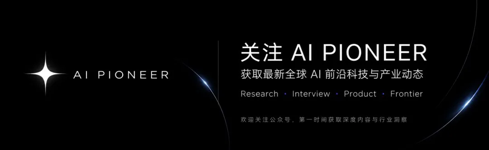